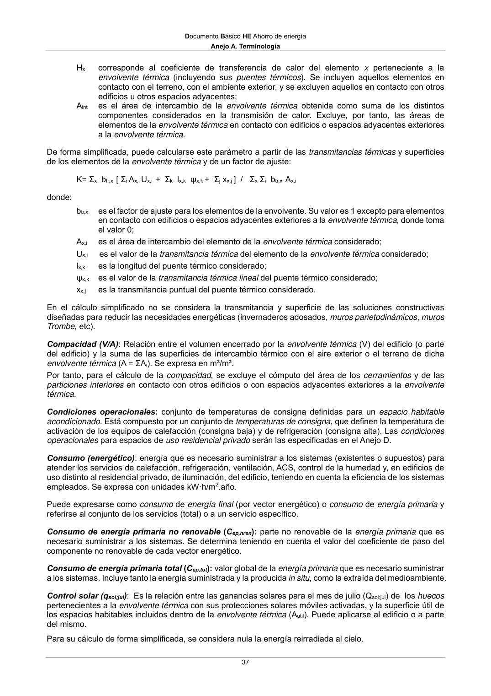

DB-HE Ahorro de energía · edición 2022-06-14 · capa oficial
Documento DB-HE-oficial · SHA-256 del PDF 7f890bd495552e979f83f72c5f5c7b642e745911a8e343a7b5b73023ce0e1f05
Página física 37 de 56.
Copia fiel del PDF fuente · Fuente oficial
Ficha de la disposición en la fuente oficial
Formato: Texto de la página (Markdown)
Documento Básico HE Ahorro de energía Anejo A. Terminología 37 Hx corresponde al coeficiente de transferencia de calor del elemento x perteneciente a la envolvente térmica (incluyendo sus puentes térmicos). Se incluyen aquellos elementos en contacto con el terreno, con el ambiente exterior, y se excluyen aquellos en contacto con otros edificios u otros espacios adyacentes; Aint es el área de intercambio de la envolvente térmica obtenida como suma de los distintos componentes considerados en la transmisión de calor. Excluye, por tanto, las áreas de elementos de la envolvente térmica en contacto con edificios o espacios adyacentes exteriores a la envolvente térmica. De forma simplificada, puede calcularse este parámetro a partir de las transmitancias térmicas y superficies de los elementos de la envolvente térmica y de un factor de ajuste: K= Σx btr,x [ Σi Ax,i Ux,i + Σk lx,k ψx,k + Σj xx,j ] / Σx Σi btr,x Ax,i donde: btr,x es el factor de ajuste para los elementos de la envolvente. Su valor es 1 excepto para elementos en contacto con edificios o espacios adyacentes exteriores a la envolvente térmica, donde toma el valor 0; Ax,i es el área de intercambio del elemento de la envolvente térmica considerado; Ux,i es el valor de la transmitancia térmica del elemento de la envolvente térmica considerado; lx,k es la longitud del puente térmico considerado; ψx,k es el valor de la transmitancia térmica lineal del puente térmico considerado; xx,j es la transmitancia puntual del puente térmico considerado. En el cálculo simplificado no se considera la transmitancia y superficie de las soluciones constructivas diseñadas para reducir las necesidades energéticas (invernaderos adosados, muros parietodinámicos, muros Trombe, etc). Compacidad (V/A): Relación entre el volumen encerrado por la envolvente térmica (V) del edificio (o parte del edificio) y la suma de las superficies de intercambio térmico con el aire exterior o el terreno de dicha envolvente térmica (A = ΣAi). Se expresa en m³/m². Por tanto, para el cálculo de la compacidad, se excluye el cómputo del área de los cerramientos y de las particiones interiores en contacto con otros edificios o con espacios adyacentes exteriores a la envolvente térmica. Condiciones operacionales: conjunto de temperaturas de consigna definidas para un espacio habitable acondicionado. Está compuesto por un conjunto de temperaturas de consigna, que definen la temperatura de activación de los equipos de calefacción (consigna baja) y de refrigeración (consigna alta). Las condiciones operacionales para espacios de uso residencial privado serán las especificadas en el Anejo D. Consumo (energético): energía que es necesario suministrar a los sistemas (existentes o supuestos) para atender los servicios de calefacción, refrigeración, ventilación, ACS, control de la humedad y, en edificios de uso distinto al residencial privado, de iluminación, del edificio, teniendo en cuenta la eficiencia de los sistemas empleados. Se expresa con unidades kW·h/m2.año. Puede expresarse como consumo de energía final (por vector energético) o consumo de energía primaria y referirse al conjunto de los servicios (total) o a un servicio específico. Consumo de energía primaria no renovable (Cep,nren): parte no renovable de la energía primaria que es necesario suministrar a los sistemas. Se determina teniendo en cuenta el valor del coeficiente de paso del componente no renovable de cada vector energético. Consumo de energía primaria total (Cep,tot): valor global de la energía primaria que es necesario suministrar a los sistemas. Incluye tanto la energía suministrada y la producida in situ, como la extraída del medioambiente. Control solar (qsol;jul): Es la relación entre las ganancias solares para el mes de julio (Qsol;jul) de los huecos pertenecientes a la envolvente térmica con sus protecciones solares móviles activadas, y la superficie útil de los espacios habitables incluidos dentro de la envolvente térmica (Autil). Puede aplicarse al edificio o a parte del mismo. Para su cálculo de forma simplificada, se considera nula la energía reirradiada al cielo.
